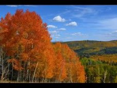
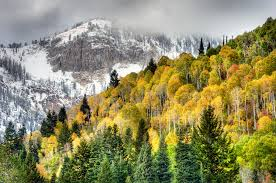
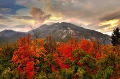
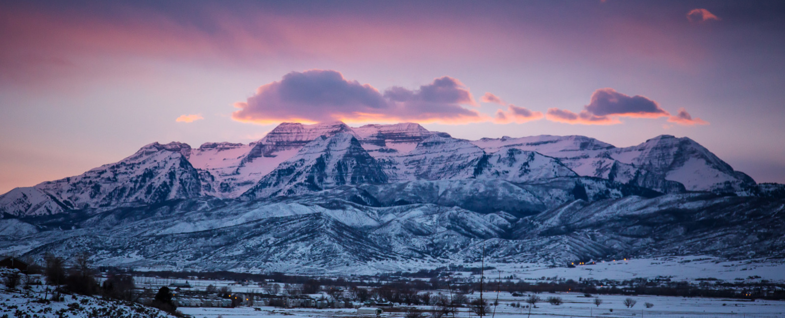
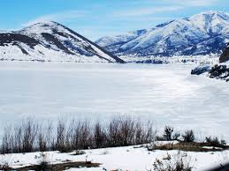
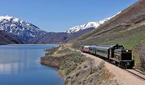
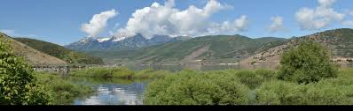
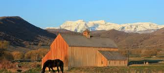
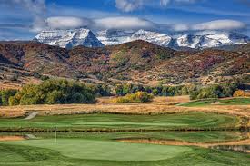
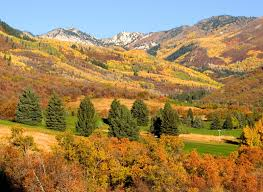

Fall leaves in Heber are beautiful.

Season changing with snow in the mountains

What amazing red colored leaves!

This mountain sunset is spectacular.

Deercreek is iced over early this year.

The Heber Valley Train goes through Deercreek in the Spring.

The Provo River is beautiful in the Springtime!

This barn shines in the summer sun.

The Wasatch State Golf Course is a popular hotspot in the summer!

The leaves are just starting to change from summer to fall.